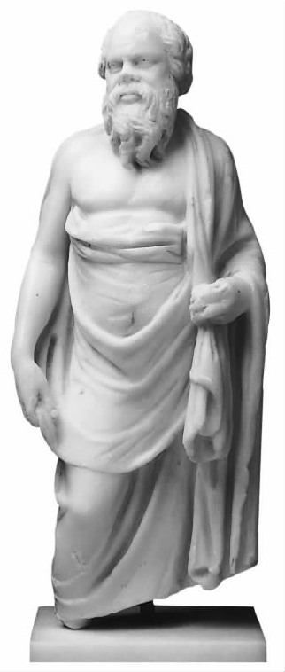

在第一章和第二章，我们看到古典哲学的一个论题如何能立刻捕捉到人的注意力，同时也看到了我们在研究传统时所采用的方式反映了我们在某些方面而非另外一些方面的历史包容性。在第三章，我们探讨了古典哲学的一个方面——美德和幸福的伦理框架，这一点对现代哲学研究来说成果尤其丰硕。下面我们来看看一些古人在知识及知识缺失方面的思考；从表面上看，这种思考与现代对这一问题的思考之间差异多于相似。
现代认识论或关于知识的学说中有一些常见的假说。其中一个观点主张，知识的存在必须经过怀疑论的证明；这些怀疑论者认为，我们永远都不会认识任何事物，因为我们永远都不会满足探寻知识所需要的条件。至少部分地可以说，知识是与事实或信息密不可分的。（这两者间的联系是什么呢？对此我们发现了完全不同的观点，这里不作详述。一些哲学家强调辩护，另一些强调恰当的因果关系，还有这些观点的复杂变体和综合意见。）很难想象一个现代的认识论者对你的机械师会修理小汽车这一想法会有多少感触。同样难以想象的是，该认识论者会认为一个知道很多科学事实的人可能并不理解它们这一点值得大惊小怪。现代认识论者实际上在努力去驳斥知识之前自己就已经占有了知识，认识论者本人对这一权威性的断言看法如何呢？
为了理解古人对知识的独特态度，可以从苏格拉底讲起。我们知道，他的朋友凯勒丰询问德尔斐的阿波罗神是否有人比苏格拉底更富智慧，阿波罗回答说没有。苏格拉底知道后感到诧异，猜不透这一神谕可能意味着什么，因为他很清楚自己没有什么智慧或专长。因此他去找那些被当作专家的人，就他们声称所具备的专业知识提问，但总是发现他们或是对自己被视为应该具备的专长不能提供足够深入的描述，或是他们的专长并不如他们想象的那样重要。他总结说，阿波罗的寓意一定是指最富智慧的人便是最了解自己的无知的人。
在所有古代哲学家中，苏格拉底最受认可自有其原因。对一般的古代文化而言，苏格拉底是一个具有象征意义的哲学家。然而，同样引人注目的是，他的一生令人难以捉摸；他没有著书立说，给我们留下来的是一系列极其不同的哲学观点。
苏格拉底（约前468——前399）的父亲索夫罗尼斯库斯是一名石匠，母亲费娜瑞特是位助产士。苏格拉底最初生活境况颇佳，但是在人生的晚年，由于他对哲学的投入、对日常事务的忽略而导致生活破落。他的妻子有一个贵族的名字：詹蒂碧；相传这个不谙世俗的哲学家的妻子很爱争吵，但是我们不清楚背后的原因。他们有三个儿子，其中一个在苏格拉底去世时还很小。后来，据不可靠传说，他还有另一个妻子默尔托。
在公元前399年，苏格拉底受到审判并被处决。控告理由极其含糊并且充满偏见，人们一直怀疑真正的原因是和政治有关。我们永远都不会知道事实真相。显然，在雅典苏格拉底的存在令人烦恼而又颇具颠覆性。
苏格拉底将哲学实践看作是个人的讨论和提问，他拒绝写作。他的追随者们推崇他是哲学研究方面互为矛盾的方法的创始人。他的弟子安提斯泰尼生活朴素，在安提斯泰尼的眼里，苏格拉底为背离传统的犬儒学派提供了灵感；而在他的弟子亚里斯提卜眼中，他被称为第一个享乐主义者。在柏拉图学园的传统中，他被美誉为首位怀疑论者。在斯多葛学派看来，他是第一位伦理哲学家。在他的年轻追随者色诺芬的著作中，他是一个迂腐的说教者。在柏拉图的著作中，苏格拉底又呈现多样的面孔。有时他是个提问者，剥去其他人在理解方面的伪饰；有时他对伦理学和形而上学发表一些积极的看法；有时他干脆只介绍其他的哲学家，这些哲学家仅谈自己的主张。苏格拉底一直是富有影响的最杰出的哲学家；他拒绝进行官方讲学，从而成为一个可从多角度进行解读的人物，他的影响波及拥有大相径庭的观点和方法的哲学流派。
神称呼人“有智慧”，其用意可最简单地解释为与希腊传统保持一致，强调人与神力间存在的鸿沟。它也引发了一些关于古代认识论的假说。苏格拉底否认他有知识，但这并不意味着他不知道那些普通的日常事实；他知道自己了解很多这类事实。再者，他有时声称自己知道相当多的道德知识，例如他从来都不会做错事，或放弃他的神圣任务。他所否认拥有的知识，是在智慧或理解的意义上来讲的，它们超出了仅仅是孤立事实的知识。即使真的有这种智慧或理解意义上的知识，它似乎也应该存在于那些精通某方面的专家身上。当阿波罗说苏格拉底是最富智慧的人时，苏格拉底感到困扰，因为如果一个人是专家，人们通常会期望他至少要知道自己是哪方面的专家。他对该神谕的反应是极力找到一个比他更富智慧的人。这并非出自无理的要求来证明阿波罗错了，而是因为他对这个神谕不明白。证明他为什么会是最富智慧之人的唯一办法，是找出他应该有的专长是什么。由于这显然并不是不言自明的，那么找到自己专长的唯一办法，就是看看他与其他人比较起来，在理解他们应该熟知或擅长的事物方面深度如何。而这只能通过提问的方式，询问他们对本该理解的事物有何看法。
苏格拉底的审判
“下面控告阿洛佩加的索夫罗尼斯库斯之子苏格拉底的诉状由皮特霍斯的美立都之子美立都提呈。苏格拉底不敬国家所奉的神，而是宣传其他的新神，至此酿成大错。再者，他败坏青年亦犯了罪。”
苏格拉底的诉状保存在雅典的档案里，后来的学者们将之公之于众。对苏格拉底的判罪是以二百八十比二百二十的投票结果确定的。（陪审团由五百零一个公民组成。）起诉人提议以死刑作为处罚。苏格拉底起初拒绝承认他做了什么值得惩罚的事，但最后他建议是否可以采取罚款的形式。陪审团投票以三百六十比一百四十的绝对多数同意以死刑处罚。
在苏格拉底关于该神谕的反应中有几个要点。从哲学上来讲，关于知识的有趣问题并不与具体的事实相关——例如，我如何能够知道 ，比如说，猫是在垫子上。哲学关注更为复杂的事物：要拥有智慧（索菲娅是菲洛索夫斯所爱的智慧）。毋庸置疑，人们认为智慧不是指仅知道个别的事实，而是指能够将它们有序地联系在一起，涉及到对某个知识领域或区间的理解。（一个切实的类比是弄懂一门语言，显然，它涉及的内容不仅仅是关于单词与句法的个别信息，还要求理解这些因素如何有机地联系在一起。这个关于语言的例子也显示出：这种综合理解并不是脱离实践的理论把握，其本身可能就包含了一种可以运用相关理解力的实践能力。）从哲学上讲，这种有趣的知识意味着各个不同的项目综合在一起，以此使得知者将各个项目彼此联系在一起，并与整体结构联系起来。除了最简单的情况之外，这需要一种将各方面联系起来的清晰能力，这种能力将解释为什么不同的部分在系统中发挥着各自的作用。（想想教授一门语言。）掌握一种专业知识（技艺）的人就很典型地拥有这种综合能力。
苏格拉底从未质疑过世上是否存在智慧或专长。这种质疑会很愚蠢，因为显然在一些领域是有专家的，例如手工艺行业。然而，可以推测阿波罗所指的不止于苏格拉底拥有类似织工或陶工的技艺，因此苏格拉底探索的是那种在人类生活中起重要作用的专长。因此，他尤其热心于质疑自封的美德方面的专家，或质疑智者所声称的那些人生中有价值的事物。他就他们自称为专家的领域向其提出疑问，结果证明他们总是对这些话题理解不足，因为他们不能自圆其说，而且其说法也确实经常前后不一。苏格拉底的问题不是从自己的观点出发，因为这只能削弱问题的要点，即应该是对方对他 声称已知的事物表现出理解力。苏格拉底从这些自封的专家能够接受的前提出发，通过让他们意识到他们并不理解自己一直在武断地认为理解的事物，来使这些专家显得不再那么高高在上。这样苏格拉底就击败了这些人，而这些人却无法通过指责苏格拉底的观点来为自己辩护，因为观点根本就没有出现。
对苏格拉底的不同看法
“人类会不厌其烦地想起曾经有个名为苏格拉底的人，他与其时的当权者和公众意见间出现了极大的分歧……这位为后来的所有杰出思想家所公认的大师即使在两千多年后的今天名望仍与日俱增，他的声名胜过了所有其他使自己所属的城市生辉的名字。但是他被他的同胞置于死地……虽然苏格拉底被判处死刑，但是苏格拉底哲学像太阳在天空升起，向整个知识界普射光芒。”
约翰·斯图亚特·密尔，《论自由》
“苏格拉底——那个雅典的小丑！”
西顿的芝诺，公元前2世纪伊壁鸠鲁派哲学家
“我们将忽略凯勒丰关于神谕的故事，因为那是一种完全诡辩且廉价的把戏。”
“苏格拉底，你的论证是伪造的。你与所遇到的人的对话是一码事，而你所做的是另一码事。”
科洛泰斯，公元前3世纪的早期伊壁鸠鲁派哲学家

图5 苏格拉底像：形体丑陋，智慧超群
表现一个人有智慧和有理解力的方式往往被称为“提供解释”，即logon didonai（提供理性的解释）。逻各斯 是一个普通的希腊词，意为理性。你对你应该理解的话题必须给出足够的理由对它们进行解释。苏格拉底的提问对象夸夸其谈，但对所谈论的话题并不能给出合理的解释，从而表明他们对这些话题并不理解。
“提供解释”的标准是什么呢？显然这对你是否真正知道，即理解某件事物至为关键。当然，至少你要能够在辩论中坚持到底并且保持你的观点前后一致。但是似乎也要求比这更积极的因素。古代认识论的一个主要部分包括探讨“提供解释”的要求，从而为你对某一领域知识的理解提供一个必要的合理基础。
在柏拉图的许多对话中，苏格拉底建议对提问者提出的什么是美德、勇气、友谊等问题，得能够提供令人满意的答案。显然这不仅仅指从琐碎的字面意思来理解，它需要表达美德或勇气的本质，而其成功的表达方式应该是被问者不仅知道美德或勇气的例子，而且解释得出为什么它们是所讨论的美德的例证，并能找出这些例证与美德之本质的关联。这一探讨有时被称为探究“苏格拉底式的定义”，虽然“定义”一词在此并不算恰如其分。
下面是这些对话中一直存在的疑惑。苏格拉底一直存志并坚持不懈地去理解类似美德和勇气这样难解的概念。但他的方法总是向他人提问，仅以共同承认的假设为起点。这种攻击式辩论（ad hominem）依靠的仅仅是对方相信什么及得出什么结论，这样一次次得出的推论便是美德、勇气、友谊等不 是什么。一些自封的专家对美德等的定义有自己的理解，苏格拉底指出，这些不是正确的答案。但这似乎并不能在我们理解美德、勇气等是什么 时助我们一臂之力。苏格拉底揭示了他人缺乏理解，但他的方式似乎没有帮助自己加深对此的理解。在目标和手段之间似乎出现了不和谐。对这一疑惑有很多解决办法，哲学家对此则意见不一。
柏拉图对知识多有说法，有些我们在下面还要再谈到。但是，柏拉图最著名的一些篇章表达了我们称之为知识专长模式的优势。对于知识来说，重要的是你是否能够像专家那样，理解相关各要素，使它们彼此相联并将它们与该领域整体联系起来掌握，同时又能够对此作出合理的解释，解释你所作出的特殊判断并将其与你对整体的统一理解联系起来。在某些场合，柏拉图会重新考虑作出合理解释这一关键想法，并以数学为模式。
在《理想国》中，柏拉图提出的知识模式可能是所有哲学家提出的模式当中最富有抱负的。在这里，雄心大志的知者必须完成多年的数学学习。数学以其严密、系统和明晰而著称，通过数学，他主要在思考系统的几何学（后来出现了欧几里得几何学就是一例）。数学以其完美的知识结构吸引了柏拉图，专长模式也一直怀有这种结构假定。再者，专长模式的所有特征似乎均以一种清晰而又令人难忘的方式与数学的特征吻合。数学不是彼此毫不相干的结果的堆砌；特定的定理可被明确地看作依赖其他已求证的结果。整个系统始于一套清楚而有限的概念和假设，而从这些第一性原理导出特定结果的方式也是清楚而又严密的。我们很容易看出：为什么柏拉图可以在欧几里得较早的版本中发现知识的完美模式是一种有组织的协调的系统。知者知道什么，他是怎样知道的，系统怎样建构在一起以及对你所知道的事情如何作出合理的解释（即求证）——在这个系统中，这一切一目了然。
数学作为一种知识模式也提出了两个新的特征。一个是数学结果异乎寻常的无懈可击性。我们不会浪费时间来争辩毕达哥拉斯定理的正误。我们已经看到已知事物的必然性和正当性在作为专长模式之关注焦点的诸问题中并不突出，这里起作用的是可运用于实践的理解力。但是柏拉图显然在某种程度上被这样一个知识体系的想法所吸引，而这种知识体系并不接受人们严肃的质询。
另一点来自这样的事实：数学提供的确定知识体系，似乎不以任何貌似有理的方式（例如通过感官感知的日常方式）把我们亲身经历的世界作为研究目标。毕达哥拉斯定理并不是通过测量实际画出的三角形及其角度而发现的，这些方面的无规律性显然与此定理无关。柏拉图感兴趣的是这一观点：我们只有通过动脑筋进行推理才能接触到一种知识体系。哲学推理的才能是我们在数学上的推理能力的更高级表现，而柏拉图绝不是对这一观点感兴趣的最后一位哲学家。
在《理想国》的主要篇章中，我们发现对知识的拥有需要掌握一个系统的领域，这一领域的内部结构像欧几里得的公理和定理一样严密，并且由一步步的求证联系在一起。另外，柏拉图略胜数学家一筹，他认为哲学实际上证明了自身的第一性原理，而数学家没有做到这一点；因此，哲学不是始于假设，而是显示出一切是如何始于得到证明而不是基于假设的第一性原理的。（这里有些难以理解，特别是柏拉图使一切都依靠他所称的善良的形式。）对于数学来说，大家知道的是一种形式的系统——柏拉图广为人知地将其视为形式的世界，而不是通过感官传递给我们的经验世界。柏拉图特意强调了用抽象的数学术语思维的人会在多大程度上得出与经验世界不一致的结论。
这当然是一种理想 ，尤其是按照柏拉图的看法，唯一有机会实现这一理想的人，是那些具有超常的与生俱来的天赋并在良好的文化氛围中长大的人。这就警示我们不要自以为能找到知识的现实例证。专长模式本身似乎至少提供了这种机会，即知识是可以获得的。但是，就像数学成为这一模式时提出的要求那样，随着所提出的要求变得正式而且苛刻，获得知识的条件被提得太高，以致我们无法企及。
亚里士多德在这方面以及其他许多方面都称得上是柏拉图最杰出的学生，他继承了《理想国》的模式，但对之进行了重要的修改，使其在哲学上更富有成果。他在自己的著作中发展了关于一种完整知识体系结构的思想，题目为与内容不太相符的《后分析篇》。（这样称呼是因为它沿袭了亚里士多德关于逻辑的论文《前分析篇》的题目。）
亚里士多德认为，柏拉图将全部知识归于一个统一的结构中是错误的。这里所犯的错误是认为所有的知识对象共同建构了一个单一的体系，且只能以这种形式被理解。但是，亚里士多德认为，并没有这样一个单独的体系；不同的知识分支采用的是根本不同的方法，这是因为各领域的内容从根本上来讲是不同的。亚里士多德并非不赞同将类似欧几里得几何学的模式作为知识的合理模式；像柏拉图一样，他愿意用数学来充实关于专长的观点。但是并没有作为一个整体的知识这类事物，只有不同种类或不同门类的知识，或曰（如我们想说的）学科。（希腊语episteme意思是知识，是复数形式，但是我们不能说“知识们”，只能说“知识门类”或“各门学科”。这样便模糊了一种方式，即亚里士多德关于一门学科的概念对柏拉图知识概念施予限制的方式。）
除了这种对知识的基本“分门别类”之外，亚里士多德的观点中还蕴含着进一步的差异。柏拉图将注意力一直集中在个体的知者身上，而亚里士多德开拓了认识论的视角，将影响知识的社会 生产的许多方面纳入考虑。“学科”更适合于亚里士多德而不是柏拉图对知识的讨论——这一说法并不虚妄。亚里士多德清楚，一门学科，例如生物学的发展方式需要许多人的研究与观察，同时，单个的研究者不可能每次都从头做起，而是要依靠他人的成果和数据，尤其是他人的问题及问题的背景。研究者本人先在不同的领域进行调查，首先详细调查那些著名而又广受认同的，或者由哲学家或其他研究者提出的观点。只有通过进入以前的研究传统并探讨它所提出的问题，研究才能够取得进步。
因此，亚里士多德能够区分（尽管如果他区分得更清楚些会更好）一种知识体系发展的不同方面。一门学科所依赖的许多人合作得出的数据和观察结果是该学科的素材，但不是科学本身。零散的信息只有汇集成一个结构体系并成为其一部分才能构成知识。因此，在构成知识之前，研究和观察的结果必须在适当的结构中占有一席之地。在《后分析篇》中，这种结构布局非常严密，数学模式的影响也非常明显。一门学科的第一性原理必须是真实的、基础性的和直接的，有必然的联系而且可以解释它们作为第一性原理所得出的结论。对于一门像生物学这样的学科是如何符合这种模式的，人们已经做了很多探索工作，并基本认同这种模式过于严密、不适合亚里士多德的多门学科。但是要点仍然在于：需要进行经验研究来收集任何有价值的信息，但是只有当我们明白它是如何符合一种正式的解释结构时，人们才会拥有知识。
柏拉图和亚里士多德两人都拥有一种非常理想的理解模式。两者都不怀疑：原则上知识是可能存在的，尽管对柏拉图来说，条件非常地理想化，离日常生活较远。当然，考虑到他们当时正在研究这种专长模式，认为知识是可能存在的想法便不显得过于激进了。但是他们主张：我们能够拥有的知识，不仅包括平凡事物方面的知识，而且包括哲学上富于挑战性的、值得去研究的题材方面的知识。这一说法的某种形式常见于大多数古代哲学流派的主张中。
然而，这并不是接近知识的唯一路径，我们发现了截然不同的方法。最基本的方法可以一部分追溯到苏格拉底，一部分追溯到皮浪——一位后来的哲学家，也没有著作留世。这便是古代的怀疑论（苏格拉底被称为怀疑论的创始人之一）。与现代怀疑论不同，古代怀疑论并不限制自身来否认知识的可能性，由此让我们仍存有真正的信仰。古代怀疑论像关注知识一样关注对信仰的坚持，它被当成一种涉及理性力量的知识观，一种比现代怀疑论远为激进的观点。
和其他所有人一样，怀疑论者以探索真理和知识开始。他们通过调研来展开这种探索，询问他人对自身观点的解释，并为自己的立场寻找依据。到目前为止，人们对知识需要理性的解释这一基本观点并无异议。任何一种值得拥有的知识（即不是日常的琐碎信息）都要求你能够对自己的观点给出令人满意的理由。怀疑论者和其他哲学家的不同之处在于：他从不认为自己已经做到了这一点。希腊术语探究者（skeptikos）的意思不是指消极的怀疑者，而是指研究者，也就是那种从事思考（skeptesthai）或探究性工作的人。正如后来的怀疑论作者塞克斯都·恩披里柯所说的那样，一些武断的哲学家认为他们发现了真理；消极的独断论者则认为自己有资格声称真理是找不到的。怀疑论者不同于这两者，他们不遵从其中的任何一种方式。他们仍旧在进行调查。
为什么会出现这种问题呢？当然了，如果你进行调查，便会发现一些 结果，可以把它们算作知识或至少是信仰。怀疑论者认为，当我们意欲思考这一点的时候，结果总是草率的（或“仓促的”）赞同：我们答应得太快了。真正而彻底的调查将会表明，情况其实更复杂、更成问题。最终，我们发现从来没有理由决定自己该作出怎样的选择，从而以判断悬置收场，即无论对待什么样的问题，都采取一种客观的中立态度。
伊里斯的皮浪（约前360——约前270）像苏格拉底一样是一位有影响力的哲学家，他启发了他人，但没有著述流传后世。他的一生甚至比苏格拉底更为令人琢磨不透，与苏格拉底不同的是，他甚至没有留下自己的肖像。
皮浪最初是个画家，有一段时间，他受到不同的哲学流派的影响。他曾陪同亚历山大大帝征服北印度，在那里遇到了印度的“裸体苦行者”或称裸体有智慧的人。人们认为这次偶遇对他自己的哲学立场有着决定性的影响。在有关他进行辩论的描述和早期北印度佛教文本之间具有相似之处。然而，希腊人在用希腊方式解释皮浪的怀疑说时，并未觉得有什么困难；特别是因为皮浪主义信徒总是与他人的观点针锋相对，由此发起了对现存的哲学学说的一系列进攻。
皮浪拒绝使自己沉湎于对任何教条的信仰中，并因此以其宁静和不受干扰给人留下了深刻的印象。在关于他的众多故事中，大多数是不友善的笑料，大意为他在日常事务中不作出判断，因此使自己看起来滑稽可笑。其他的故事是说他过着一种受人尊重的生活，伊里斯为纪念他而免除了哲学家的税负。他的学生提蒙写了讽刺文章来抨击独断论哲学家，还写了散文叙述皮浪的主张。尽管这些主张不易理解，却为它们的后来版本做了铺垫，尤其在主要的怀疑论文本塞克斯都·恩披里柯的《皮浪怀疑说纲要》（日期不明，但可能是公元2世纪）中体现的主张。
一开始这听起来滑稽可笑，确实不够严肃。怀疑论者真地认为我们永远不能确定现在是什么时间、太阳是否正在闪耀、这是面包而不是草吗？这是古代人们的反应，但却是错误的反应。
皮浪是怀疑论一个支脉的创始人，我们对他知之甚少；对他在知识方面的态度，我们所能给出的描述极其有限。他认为我们不会有理由让自己承诺任何事情，这一坚定的态度引起了不友善的笑话，例如，他必须得到非怀疑论的朋友的照顾以免走下悬崖等等。但是还有一种传统，大意是说他过着一种正常的生活，因此最有可能的是，像后来的怀疑论者一样，他也认为即使我们不能使自己拥有信仰，我们也可以按照事物表现出来的方式去生活。
从皮浪那里受到启发的后期怀疑论者发展了我们“按照外观来生活”的想法。也就是说，我们所需要的，仅是按照事物以一种方式而不是另一种方式所呈现的面貌来生活。如果我们超越了这一点（当我们从日常事务转向有争议和复杂的问题时就会这样做），并且试图使自己拥有信仰，我们就始终会发现：假如我们进行严密的调查，便不会轻信什么。结果是这一问题的两个方面同样拥有很好的理由，我们便发现自己在两个方面都有倾向性，所以我们选择不介入，对这个问题不作判断。然而这并不意味着我们不知所措了，因为我们仍然可以按照生活展现出的面目来生活。我不能承担义务这一点并不能够防止事物以一种而不是另一种方式出现在我面前。在理性上不承担义务并不排除其他被我们所忽略的动力源泉——习惯、愿望、对法律的恐惧等。如果理性不能使我们作出承担，我们便不能继续生存，这个观点来自对理性力量的过高估价。我们并不始终需要理性，它会诱使独断论者过早地承认某种学说的正确性。
另外，怀疑论者采取了攻势。他们认为，我们理性地坚持信仰，目的是为了得到幸福，而幸福存在于平和的心境。我们意欲对事物的运作方式有信心，不因其不确定性而忧心忡忡。但是信奉关于这一话题的积极或消极的学说永远做不到这一点；它所能做的，仅仅是取代或分散最初的焦虑。只有那些认识到抱有信仰纯属徒劳的怀疑论者才是宁静的。缜密的调查带来的结果是没有信仰，而这又带来了平和的心境，这种心境正是人们在所期望的答案中苦苦寻觅的。因此只有怀疑论者得到了所有其他人都在寻找的东西，那就是平和的心境。但是他们只是通过不去寻找而得到它，它来了便有了。而此种心境的到来也是认真调查的结果，这种调查使你不可能去信奉或反对任何观点。
在怀疑论者的故事中，许多地方令人难以置信或看起来牵强。另外，还有一些问题是潜伏着的，这里仅提出几个。怀疑论者在什么范围内没有信仰？这种无信仰状态是否只适于他所调查的事物？若是这样，他会不会有一些信仰，即那种不难理解的信仰？无论怎样，如果怀疑论者给我们讲如何获得平和的心境，别人如何做不到，而怀疑论者却做到了，他们的目的是什么呢？没有信仰的他们又是如何做到这一点的呢？
古代的怀疑论是最有趣、最微妙的哲学主张之一。与其主张独断论的堂兄弟一样，它包含关于理性的有力假设，虽然这些假设具有颠覆意义而不是积极意义。古代的怀疑论比现代怀疑论形式更丰富多彩，后者多局限于对知识的抱怨，因为不加鉴别地接受一些题材可能会抛弃了另一些题材。与现代怀疑论者不同的是，古代怀疑论者对在哲学领域内部占有一席之地并不感兴趣。他们认为，哲学上的理性在实践中总会削弱自身。
苏格拉底为古代怀疑论的另一支脉提供了一种供选择的启示，这个支脉自公元前3世纪中期直到公元前1世纪该支脉结束这段期间取代了柏拉图学园。这些学员认为，按照柏拉图的思想进行哲学思索应该采取苏格拉底的做法，即削弱他人的观点，但不提出你自己的观点。因此怀疑论的学员们花费了很多时间争论攻击式辩论（即不出自他们自己的任何立场而只是出自对方接受的前提），反对独断论哲学家。他们认为，独断论哲学家（主要是斯多葛学派）的主张论据不足。与皮浪怀疑主义者不同，这些学员没有对幸福或平和的心境发表主张。他们关于理性的假设，只是说独断论哲学家总是过于草率。他们的观点可以从内部被推翻而无须依靠建立其他的观点。
到目前为止，我们已经看过关于知识和信仰的大胆而激进的观点，积极和消极兼而有之。然而，如果我们的印象是，古代对知识的关注总是集中在智慧与理解上，那便是受了误导。我们也能发现这些关注点与现代关注点有重合之处。例如，柏拉图提出了有趣的主张来抨击相对主义的知识论，这些主张不依赖他本人的宏大叙述中的任何特殊要点。柏拉图在对话集《特埃特图斯》中反驳过普罗泰戈拉，普罗泰戈拉这样的相对主义者则声称：一个人有一种真正的信仰意味着某件事物对他来说是真实的，因此真理对于信仰者来说是相对的。这个发现乍看起来可能令人轻松，尤其是因为它化解了所有的矛盾。风在我看来是热的，而对你来说是冷的。我们两个都对，没有什么要争辩的。但是，普罗泰戈拉将他的相对主义学说作为一种理论 ，作为某种我们应该接受并认真对待的事物予以提出（只要是为了从我们的争执中解脱出来）。但假如普罗泰戈拉是对的，那么他自己的学说的真实性对他来说也是相对的，即它只是事物呈现给他的方式。而我们为什么要接受以某种方式呈现给普罗泰戈拉的事物或对其感兴趣呢？如果我们认真对待相对主义，把它作为一种理论，那么相对主义是不能自圆其说的。（人们仍然在利用这一强有力论点的各种表达形式来反驳现代相对主义。）
柏拉图也对这一问题感兴趣，即当人们说我们知道具体的事实时，其意为何；这一点由斯多葛学派提出，他们将专长模式作为他们所谓的真正意义上的知识。但他们还提出了关于所谓理解的认识，尤其在一些现代认识论学说中，这种理解是对知识的一种思考方式。当你与一种经验的事实如此关联以至于肯定不会搞错时，你便拥有了理解力。斯多葛学派作了些努力来搞清楚这种情况成立需要什么条件。一般来说，讨论的事物应该对你产生影响，即给你留下印象。而这种印象一定要以合适的方式来自该事物——这种因果关系一定要合适。而这种印象一定不能来自任何其他 事物，无论它与该事物多么类似。这些条件被当作一种会产生反面例子的挑战，在反面例子中，所有的条件都得到满足，但是我们不得不承认我们没有知识。学园派怀疑论者特别就这个话题与斯多葛学派展开了长期的辩论，其结果是斯多葛学派似乎又提出了更多的条件和修正意见。
最后，我们确实发现，在古代认识论学说的范围内，有一种学说看起来满足了现代学说所要求的条件，这就是伊壁鸠鲁学说。因为伊壁鸠鲁确实是在一种现代的意义上为怀疑论担忧，即人们不再认为我们的信仰可能会满足知识的标准，他认为自己必须确立知识的可能性来应对这种挑战。他不是从专长模式的角度，而是从知者与特定事物的关系的角度来思考知识。对于伊壁鸠鲁来说，我所知道的基本上是特定的零散信息，而我与这些信息之间的关系构成了知识。任何比这更宏伟的想法，都将被证明是由这些最基本的素材以最经济、最细致的可行方式构成的。
伊壁鸠鲁的学说在古代学说中并不具有代表性，严格意义上讲，它是经验主义的；也就是说，它始于并依靠我们的感官经验。我所知道的，都来自感官，因为只有通过感官传达给我的信息才没有经过中介的处理，才不会产生误差。我的寻常信仰历经了超越经验的推理过程，虽包含真理，却也蕴含了错误。这些错误之所以得以潜入，是由于人类有犯错的倾向。但是假如我只集中于感官所告诉我的一切，我便不会犯错。对伊壁鸠鲁来说，信仰和推理是错误之源，而并非像大部分其他流派所认为的那样，是我们改正错误的能力源泉。于是，仅当我开始在从经验获得的知识中加入信仰时，错误才会乘虚而入。因此，感官所传达给我们的，甚至还不如我们关于桌子和塔的叙述更丰富——当我们从远距离来判断一个方形的塔是圆形的时候，显然这是错误的。相反，感知的结果只局限于从特定的角度、在特定的地点等方面来看这个塔呈现给我们的是什么样子。因此我们拥有知识，因为我们不会在这方面犯错误。然而，我们可能对这个塔有错误的认识，因为我们作出的断言可能不恰当地估计了角度、距离等。结果，我们的知识与我们对周围世界的日常观察比较起来要有很大的局限性。
人们认为伊壁鸠鲁关于知识的学说并未给人留下特别深的印象。事实上，人们普遍认为它极度粗糙。然而，后来的伊壁鸠鲁派成员确实提出了对我们所认为的归纳问题的有趣类比，即我们如何从众多特定观察中对所有 这类现象作出合理的归纳总结。例如，我们是否有理由这样归纳（“我们”指的是生活在意大利的伊壁鸠鲁派哲学家）：由于我们所观察过的每个人都是要死亡的，所以生活在迄今为止未发现的国家（如英国）里的人类也是要死亡的？（哲学家菲洛德穆补充说，前提是那儿有人居住。这个例子就是他举的。）
经验主义者关于知识的学说，如强调知者与特定事实的关系，在古代认识论中不占主流。然而，即便只是粗略地考察了古代关于知识的认识后，我们也发现了古代研究方法的广度和多样性。古代认识论领域的学生会发现许多具有挑战性的学说和广泛的争辩传统。他会发现有几种理解知识 的方法：智慧说、理解特定事实说、倾向于描述抽象推理的学说、倾向于描述基本感知的学说。他还会发现：人们不仅对知识投入了极大的研究精力，更普遍的则是关注信仰问题以及积极与消极的理性力量。